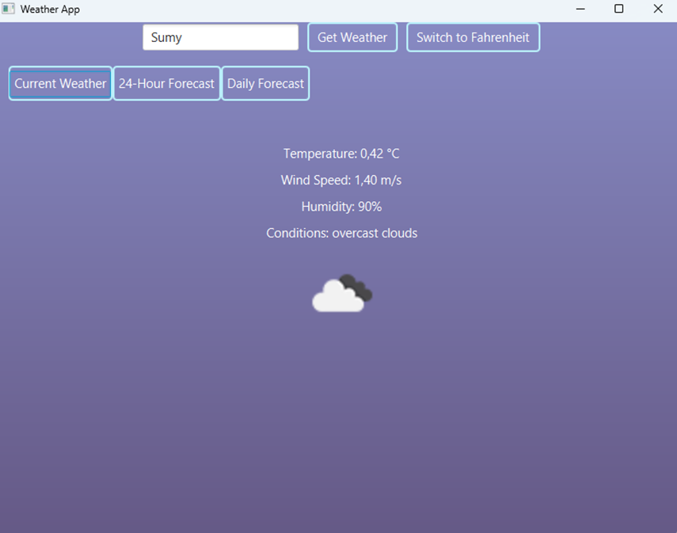

Проeкт
Сучасний світ вимагає від користувача швидкого доступу до інформації, зокрема й до актуальної погоди. Перегляд погодних умов — невід'ємна частина щоденної рутини. Цей застосунок створений для зручного отримання інформації про поточну температуру, вологість, вітер, стан неба, а також прогноз на декілька годин або днів. Програма є десктопним додатком, написаним на Java з використанням JavaFX та OpenWeather API, забезпечує зручний графічний інтерфейс, автоматичне оновлення погоди та локалізацію українською та англійською мовами.
Ключові слова
- Java
- JavaFX
- OpenWeather API
- Погода
- Десктопний додаток
Мета дослідження
Розробити зручний десктопний додаток для перегляду поточної погоди, прогнозу на майбутнє та представлення даних у візуально зрозумілій формі.
Основні завдання
- Вивчення API OpenWeatherMap
- Проєктування інтерфейсу користувача на JavaFX
- Реалізація функцій отримання та оновлення погодних даних
- Локалізація інтерфейсу (UA/EN)
- Тестування функціональності та зручності
Очікувані результати
Функціональний десктоп-додаток, який дозволяє користувачу отримувати актуальну інформацію про погоду у своєму місті, бачити прогноз на декілька годин/днів, перемикати мови, переглядати погодні карти та користуватися простим і зрозумілим інтерфейсом.
